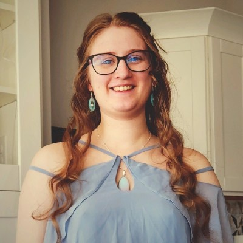

Michelle Mannisto

Contact Me
Summary
Innovative Janet of All Trades with 10+ years working in fast-paced environments. Uses excellent problem-solving and critical thinking skills to quickly create and implement effective solutions.
Education
Bachelor of Science (B.S.) - Geography
South Dakota State University | Brookings, SD | Dec 2024
- Dean's list recipient Spring 2024
- Dean's list recipient Fall 2023
- Minor in Geospatial Intelligence
- Coursework: geographic principles, physical geography and weather
Bachelor of Science (B.S.) - Geographic Information Systems
South Dakota State University | Brookings, SD | Dec 2024
- Dean's list recipient Spring 2024
- Dean's list recipient Fall 2023
- Coursework: GIS data creation, GIS applications, GIS vector and raster modeling, intro the small uncrewed aircraft, and research methods in Geography
Bachelor of Science (B.S.) - Geology
South Dakota School of Mines and Technology | Rapid City, SD | Incomplete
- Incomplete due to medical reasons
- Dean's list recipient Spring 2021
Bachelor of Arts (B.A.) - Digital Design and Animation
Grand Canyon University | Phoenix, AZ | Dec 2019
- Graduated Summa Cum Laude
- Served as Vice President of the Animation Club
- Graduated as a member of the Honor's College
- Acted as a member of the National Society of Collegiate Scholars
Work Experience
GIS Specialist
Congressional Communities | Remote, WI | May 2022 - Present
- Analyzed and geocoded independently sourced data sets
- Managed data and created maps using ArcGIS and other platforms
- Studied state government files, census, and geographic data to independently split congressional districts into smaller communities within a deadline
- Collaborated with a teammate to encourage the use and implementation of more effective methods that increased productivity up to 600%
- Collaborated as an executive team member with a wide variety of coworkers of different demographics and skill sets
- Independently created Storymaps with original maps using ArcGIS Pro and ArcGIS Online on topics useful to constituents; one Storymap was shownt to Virginia's Congressman Don Beyer's chief of staff, Noah Simon
Owner
Grinning Moose Productions, LLC | New Glarus, WI | Jan 2021 - Present
- Created all merchandise, including jewelry, clothing, and photography, from scratch
- Handled administrative requirements involving records management, legal compliance, and tax submissions
- Organized regular inventory counts to keep records accurate and identify supply needs or loss points
Tutor
South Dakota School of Mines and Technology | Rapid City, SD | Sept 2021 - Dec 2022
- Helped students develop critical thinking skills and strong study habits to improve grades
- Tutored students in Geology, Paleontology, Statistics, CSC, and resume building
Intern
Glendive Dinosaur and Fossil Museum | Glendive, MT | June 2021 - Aug 2021
- Assisted in preparing information and research materials for special projects
- Collaborated with staff and volunteers to keep up morale and create a friendly atmosphere for guests
- Created promotional materials and a logo package for the museum in a tight deadline
Tutor
Copper Mountain College | Joshua Tree, CA | Aug 2016 - May 2017
- Incorporated different educational methodologies to enhance classroom-taught materials
- Tutored students in Statistics, Algebra, Calculus, Physics, English and Office Suite
Skills
- ArcGIS Pro
- GIS Principles and Methodology
- ArcGIS Online
- ArcGIS Storymaps
- Geospatial Data
- Data Entry
- Data Collection
- Microsoft Office Suite
- Python - Intermediate
- SQL - Intermediate
- HTML - Intermediate
Volunteer
Volunteer
South Dakota School of Mines and Technology | Rapid City, SD | Aug 2022 - June 2023
- Micropicked sediment from archaeological digs for fossils and artifacts
- Created molds and casts of specimens
- Collaborated with a diverse group of students and faculty to accomplish larger tasks
LEAD Volunteer
Yavapai County Juvenile Detention Center | Prescott, AZ | Nov 2020 - Nov 2020
- Independently determined class topics and created lesson plans with corresponding information packets
- Successfully taught engaging classes of up to six probationers
- Effectively collaborated with department personnel